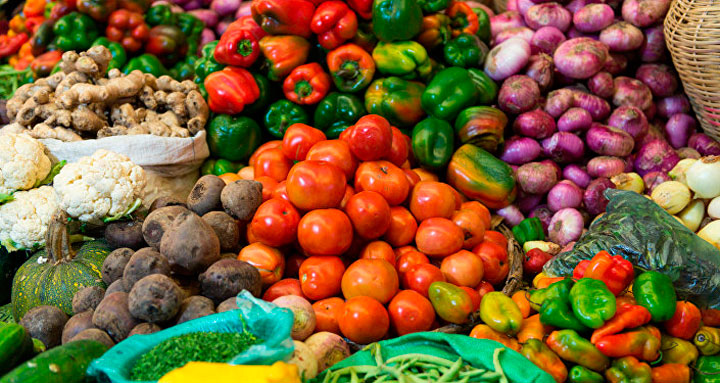
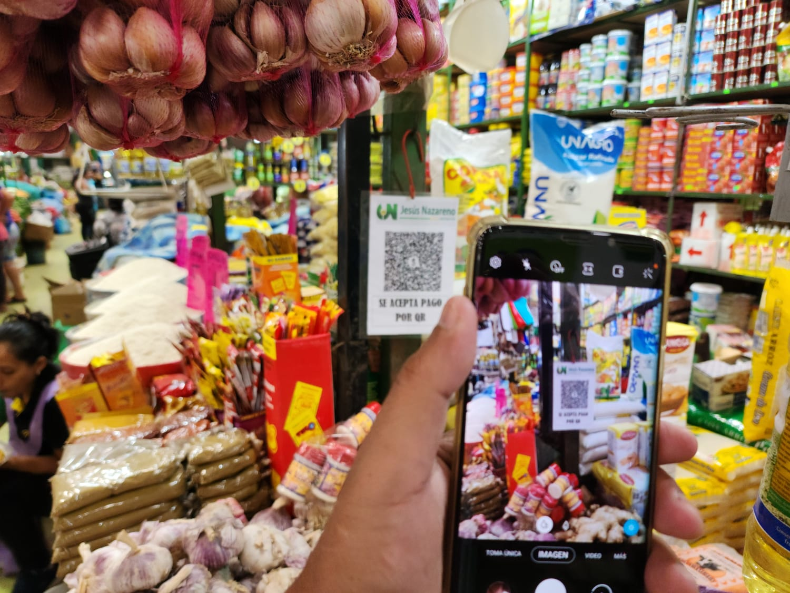
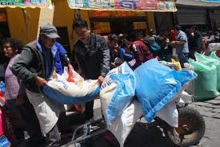
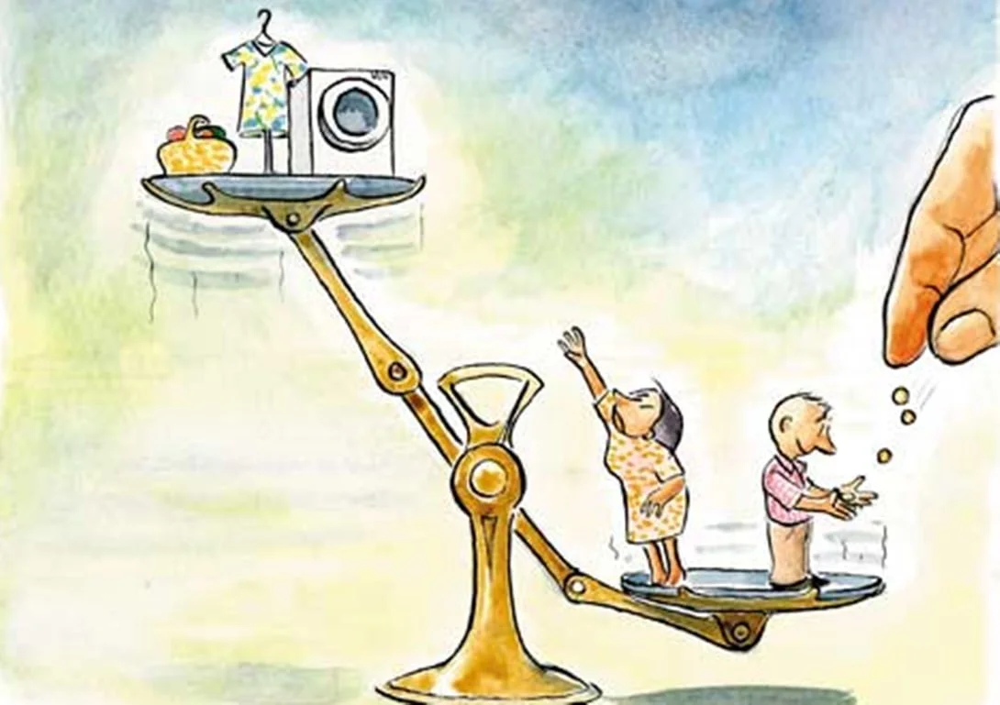

Contexto del Problema
Bolivia atraviesa una compleja coyuntura socioeconómica caracterizada por la escasez de divisas extranjeras (dólares), dificultades logísticas en la importación y distribución de carburantes controlados por YPFB, bloqueos constantes de carreteras troncales y un incremento generalizado en los precios de la canasta familiar básica.
Impactos principales:
- ⛽ Carburantes: Escasez y largas filas en estaciones de servicio afectan el abastecimiento diario.
- 🛒 Precios: Los alimentos de la canasta básica suben de precio, reduciendo el poder adquisitivo.
- 🚌 Transporte: Bloqueos y desvíos encarecen el traslado de personas y mercancías.
Nota: Este proyecto es de carácter educativo. No toma posición política; busca demostrar con modelos matemáticos sencillos cómo distintos factores afectan la economía cotidiana.
⛽ Simulador A: Abastecimiento de Carburantes

Calcula cuántos días durará la reserva de un surtidor según el consumo y el reabastecimiento diario.
🛒 Simulador B: Precios de Alimentos

Calcula el impacto del aumento de precios de productos básicos en el gasto familiar.
🚌 Simulador C: Costo de Transporte
Estima cuánto aumenta el gasto operativo de transporte cuando hay desvíos o bloqueos de rutas.
💰 Simulador D: Compras Familiares

Verifica si el presupuesto familiar alcanza para cubrir la lista de compras actual.
📢 Simulador E: Rumor de Escasez

Simula cómo un rumor dispara la demanda por pánico y agota el stock disponible rápidamente.
📉 Simulador F: Pérdida del Poder Adquisitivo

Calcula cuánto menos puede comprar una familia cuando los precios suben pero el ingreso se mantiene.
🔢 Algoritmo: Serie de Fibonacci
Cálculo lógico matemático estructural para validar procesos iterativos en la programación del DOM.
📋 Casos de Estudio para Probar
Puedes utilizar estos datos base en los simuladores para verificar su funcionamiento:
- Caso A (Carburantes): Reserva: 10,000 | Consumo: 1,200 | Reabastecimiento: 300 | Crítico: 2,000. (Espera: Alerta cerca del día 9).
- Caso B (Alimentos): Precio Ant: 8 Bs | Act: 11 Bs | Cantidad: 10 | Semanas: 4. (Espera: Incremento mensual de +120 Bs).
- Caso C (Transporte): Distancia Normal: 10 km | Desvío: 16 km | Costo/km: 2 Bs | Viajes: 5. (Espera: Gasto extra de 60 Bs semanales).
💡 Conclusiones
Con operaciones básicas es posible representar problemas reales. Mostrar resultados de forma visual facilita la comprensión de fenómenos económicos y demuestra la utilidad del DOM y la lógica en JavaScript en situaciones cotidianas.
🎓 Créditos del Proyecto
Materia: Programación Web I
Título: SimuladorBO – Final Lap
Tecnologías: HTML5 · CSS3 · JavaScript Puro · DOM